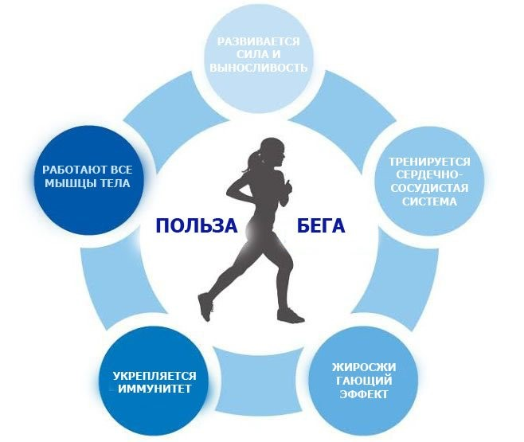

Ось лише деякі причини, з яких варто почати бігати:
Біг покращує серцево-судинну систему, склад тіла, зміцнює м’язи, суглоби, кістки, розвиває витривалість.
Знімає стрес і служить ефективним способом боротьби з тривожністю і депресією, допомагає побороти проблеми зі сном.
Регулярний біг (навіть 1 раз в тиждень), згідно з дослідженням 2018 року, скорочує ризик смертності від будь-яких причин на 23-30%.
У 2016 році вчені випустили статтю про те, люди, що займаються бігом, в середньому живуть на 3 роки довше, ніж ті, хто ігнорує кардіо-навантаження.
Визначтеся з метою бігу
Як правило, переважає 2 причини, через які люди починають займатися бігом:
Гарна новина полягає в тому, що вам не потрібно модне бігове спорядження або дорогий одяг, щоб ефективно займатися. Біг – досить невибагливий вид спорту. В цілому базовий комплект включає кросівки, футболку/кофту, шорти/тайтси, шкарпетки і спортивний бюстгальтер для жінок.